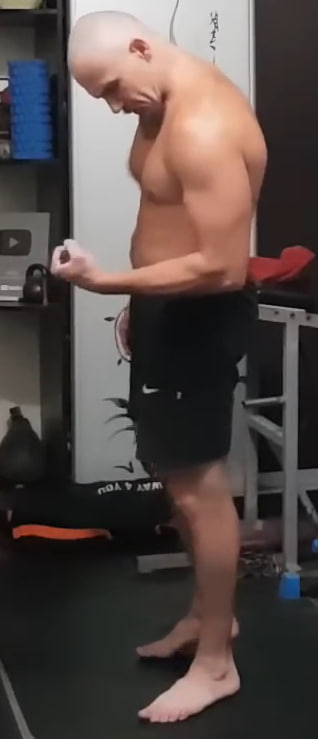
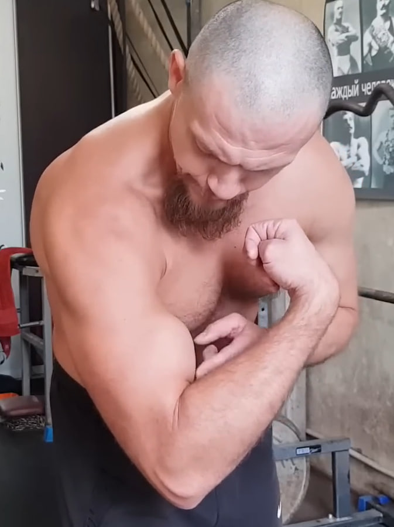
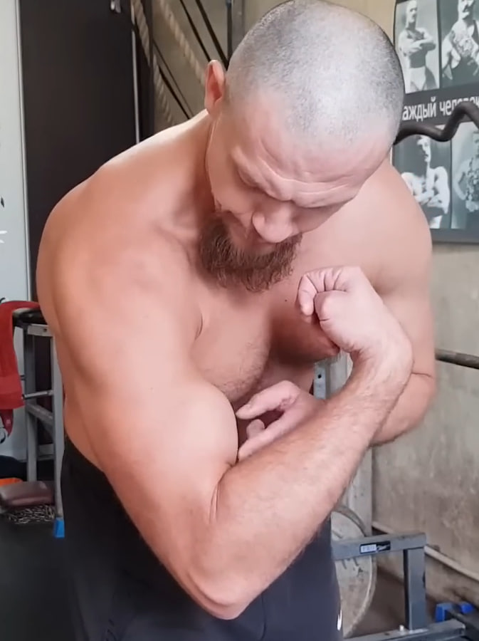
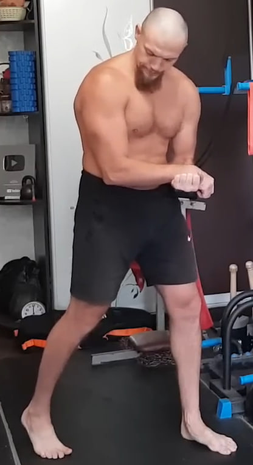
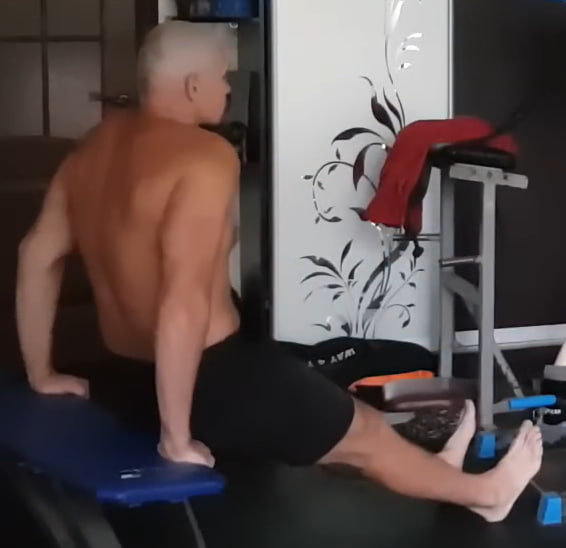
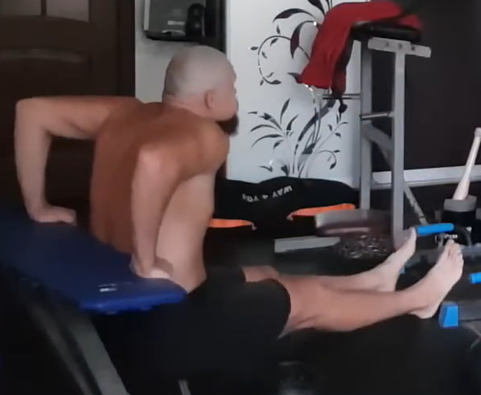
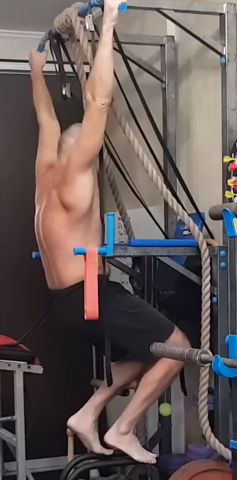

1. Bombeo de antebrazo con agarre


Aprieta con fuerza un calcetín o un trozo de tela en el puño y mueve la muñeca arriba y abajo sin soltar el agarre. El movimiento es corto, continuo y con máxima tensión para llenar de sangre el antebrazo antes del trabajo principal. Realiza 10 repeticiones por cada mano.
2. Bíceps isométrico con el brazo a 90 grados

Flexiona el brazo de trabajo formando un ángulo cercano a 90 grados frente al cuerpo. Con la otra mano sujeta con fuerza la muñeca o el puño y empuja hacia abajo, creando resistencia. El brazo de trabajo intenta seguir flexionándose, pero la mano de apoyo bloquea el movimiento, generando una contracción profunda del bíceps. Mantén la tensión unos segundos y repite 10 veces por cada lado.
3. Bíceps isométrico con el brazo casi extendido

Coloca el brazo de trabajo casi completamente extendido hacia abajo, dejando un pequeño ángulo en el codo. Con la otra mano sujeta el antebrazo o la muñeca y empuja hacia abajo mientras el brazo de trabajo intenta flexionarse hacia arriba. Mantén una tensión fuerte y constante en el bíceps durante unos segundos y repite 10 veces por cada brazo.
4. Supinación y poses isométricas para bíceps

 


Gira la muñeca hacia afuera (supinación) y tensa el bíceps como en una pose de culturismo, manteniendo la contracción máxima. Cambia ligeramente el ángulo del codo, la altura del brazo y la posición del torso para activar diferentes fibras del bíceps. Después, realiza tensión doble con ambos brazos a la vez para ahorrar tiempo y crear un efecto sinérgico. Mantén cada pose unos segundos y completa 10 cambios de ángulo por brazo, finalizando con varias contracciones simultáneas.
5. Tríceps isométrico con el brazo a 90 grados
Flexiona el brazo de trabajo formando un ángulo de unos 90 grados, pero esta vez colócalo por encima de la mano de apoyo. La mano inferior actúa como punto fijo y empuja hacia arriba, mientras que el brazo de trabajo intenta extenderse hacia abajo, activando intensamente el tríceps. Mantén la tensión máxima unos segundos y repite 10 veces por cada brazo.
6. Fondos en banco para tríceps con pausa isométrica
 Siéntate frente a un banco y apoya las manos en el borde. Extiende las piernas al frente y eleva la cadera para quedar en suspensión. Desciende flexionando los codos hacia atrás y luego sube casi por completo, sin bloquearlos. En la parte alta mantén una tensión fuerte durante 10 segundos. Repite el ciclo 10 veces, manteniendo la postura estable y los hombros controlados.
7. Rotura en tres puntos con toalla


Toma una toalla o cinturón y enróllalo en las muñecas dejando una distancia fija entre las manos. Desde la posición frontal, intenta “romper” la toalla con máxima tensión. Luego eleva los brazos por encima de la cabeza y repite el esfuerzo en la posición alta. Para finalizar, baja los brazos y realiza la tensión en posición inferior. En cada punto entra en tensión durante 3 segundos, mantén 6 segundos de fuerza máxima y suelta en 3 segundos. Completa 10 ciclos cambiando ligeramente la altura y el ángulo.
8. Colgamientos parciales con apoyo en los pies
Agarra una barra o cualquier estructura firme y segura. No cuelgues todo tu peso: mantén los pies apoyados, dejando parte de la carga en el suelo para proteger la columna y los hombros. Desde esta posición permite que el cuerpo se alargue suavemente, relajando los hombros y creando una tracción controlada en la espalda. Mantén el colgamiento 10 segundos, descansa brevemente y repite 10 veces.
9. Isometría para dorsal ancho detrás de la espalda

Ponte de pie y lleva el brazo de trabajo detrás de la espalda, sujetando la muñeca o la mano con la otra mano. La mano de apoyo tira del brazo hacia abajo, mientras que la zona bajo la escápula (dorsal ancho) intenta oponerse a ese movimiento, como si quisiera mantener el hombro en su sitio y empujar ligeramente hacia arriba. La zona entre la columna, el hombro y el brazo se tensa muy fuerte de forma isométrica. Mantén la contracción durante 10 segundos y repite 10 veces por cada lado.
10. Burpee sin flexión


Desde la posición de plancha salta llevando los pies hacia adelante y coloca el cuerpo en posición de sentadilla baja. Desde ahí realiza un salto vertical con los brazos abajo, manteniendo el cuerpo compacto. No hay flexión de brazos en este ejercicio. Completa 10 repeticiones con un ritmo fluido y controlado.
11. Saltos en posición de plancha


Comienza en posición de plancha con los brazos extendidos. Desde ahí salta llevando los pies hacia adelante debajo del pecho y vuelve atrás a la plancha con otro salto. Mantén el abdomen firme y evita que la cadera se hunda durante el movimiento. Realiza 10 repeticiones con un ritmo elástico y controlado.